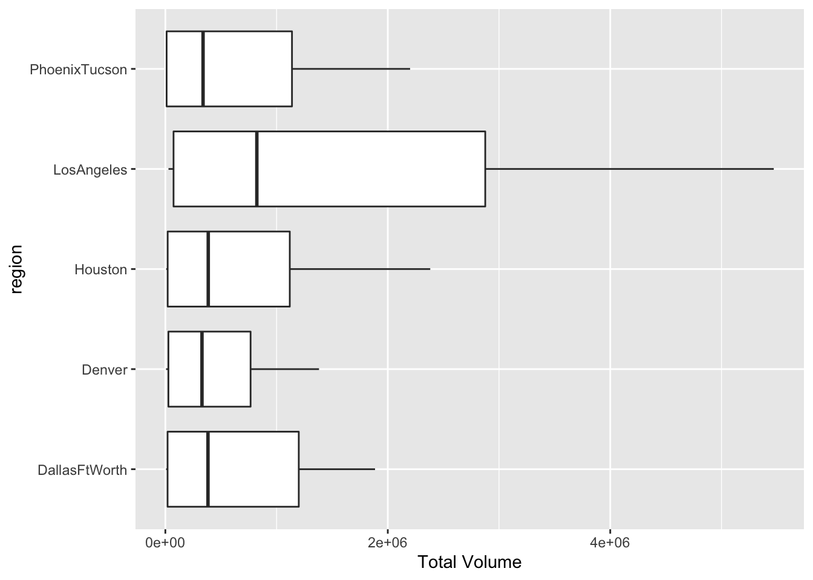
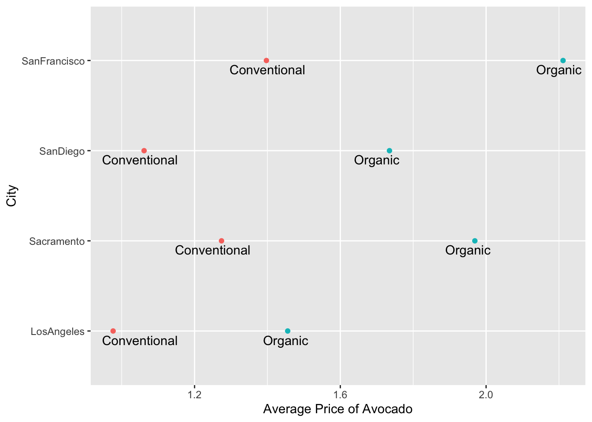
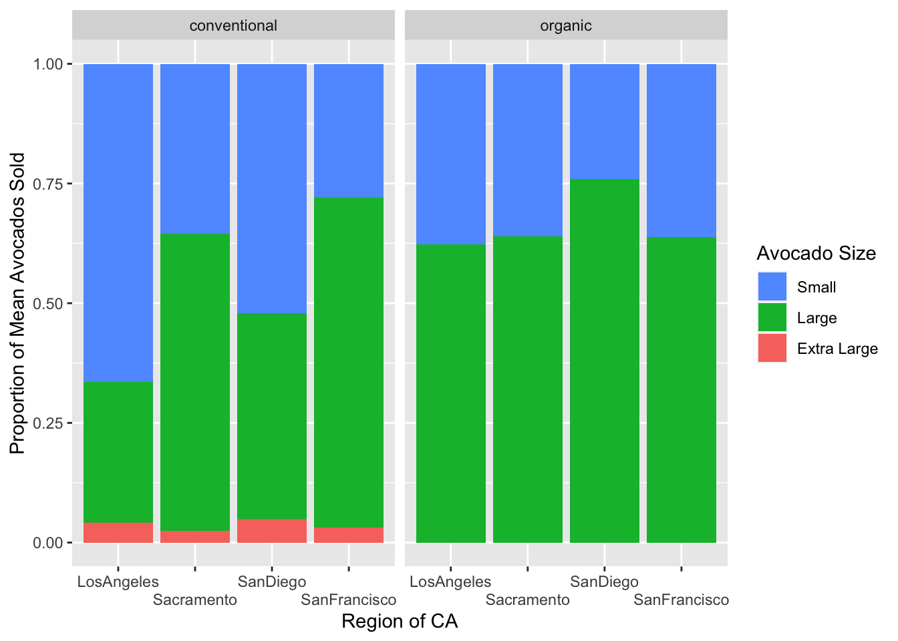

library(tidyverse)Lab 4: Avocado Prices
Question 1
Describe the data set
This data set includes information about the sale of Hass avocados. Some information the data set provides is the average price of an avocado, they year of purchase, city or region, and the size of the avocado.
# Loading in Data
avocado <- read_csv(here::here("supporting_artifacts",
"learning_targets",
"Lab4",
"avocado.csv")
)Question 2
Cleaning the dataset
# renaming columns
avocado <- avocado |>
rename("tot_small" = "4046",
"tot_large" = "4225",
"tot_ext_large" = "4770")# Checking List of regions
check_regions<- distinct(avocado,
region)
check_regions# A tibble: 54 × 1
region
<chr>
1 Albany
2 Atlanta
3 BaltimoreWashington
4 Boise
5 Boston
6 BuffaloRochester
7 California
8 Charlotte
9 Chicago
10 CincinnatiDayton
# … with 44 more rows# Filtering by regions
region <- data.frame(region = c("Midwest",
"Midsouth",
"Northeast",
"Plains",
"SouthCentral",
"Southeast",
"West",
"GreatLakes",
"WestTexNewMexico")
)
# Create data set with just regions data
avocado_region <- avocado |>
semi_join(region, by = "region")# Create data set with just states
state <- data.frame(state = c("California",
"NewYork",
"SouthCarolina"
)
)# Filtering by metropolitan areas
metro <- avocado |>
anti_join(state,
by = c("region" = "state")) |>
anti_join(region,
by = "region") |>
filter(region != "TotalUS")
# count_metro <- distinct(metro, region)Question 3
# Filtering by organic and 2017
organic_region <- avocado_region |>
group_by(region) |>
filter(type == "organic",
year == 2017) |>
select(year,
region,
tot_small) |>
summarize(across(tot_small,
mean))
slice_max(organic_region, order_by = tot_small)# A tibble: 1 × 2
region tot_small
<chr> <dbl>
1 West 35287.The major region that sold the most organic, small Hass avocados on average in 2017 was the West region.
Question 4
# Split Date variable into year month and day
avocado_date <- avocado |>
separate(col = Date,
into = c("Year",
"Month",
"Day"))
# Finding highest volume sold by month
high_volume <- avocado_date |>
group_by(Month) |>
select(Month,
`Total Volume`) |>
summarize(across(.cols = everything(),
mean,
na.rm = TRUE))
slice_max(high_volume, order_by = `Total Volume`)# A tibble: 1 × 2
Month `Total Volume`
<chr> <dbl>
1 02 1018825.The month with the highest average volume of avocado sales is February.
Question 5
# Finding the top five regions with highest averages for total volume
top_sold <- metro |>
group_by(region) |>
select(`Total Volume`, region) |>
summarize(across(.cols = everything(),
.fns = mean)
) |>
slice_max(order_by = `Total Volume`, n = 5)
# Create data set with only the top 5 averages
vol_compare <- metro |>
semi_join(top_sold, by = "region") |>
group_by(region)
# Create a box plot comparing the top 5 regions
ggplot(vol_compare,
mapping = aes (x = `Total Volume`,
y = region)) +
geom_boxplot()
The Los Angeles metro region has sold the most total avocados. Above is a box plot of the top five metro areas with the highest averages of total volume sold.
Question 6
# Create data set with only California cities
cali <- data.frame(city = c("LosAngeles",
"SanDiego",
"Sacramento",
"SanFrancisco")
)
cali_avo <- avocado |>
semi_join(cali, by = c("region" = "city"))# Finding the largest difference in organic and conventional avocado prices by california cities
type_diff <- cali_avo|>
pivot_wider(names_from = region,
values_from = AveragePrice) |>
group_by(type) |>
select(type,
LosAngeles,
Sacramento,
SanDiego,
SanFrancisco) |>
summarize(across(.cols = everything(),
.fns = mean,
na.rm = TRUE)) |>
pivot_longer("LosAngeles":"SanFrancisco",
names_to = "Region",
values_to = "AvgPrice")
type_diff# A tibble: 8 × 3
type Region AvgPrice
<chr> <chr> <dbl>
1 conventional LosAngeles 0.976
2 conventional Sacramento 1.27
3 conventional SanDiego 1.06
4 conventional SanFrancisco 1.40
5 organic LosAngeles 1.46
6 organic Sacramento 1.97
7 organic SanDiego 1.73
8 organic SanFrancisco 2.21 # Plotting the differences
ggplot(data = type_diff,
mapping = aes(x = AvgPrice,
y = Region,
color = type)
) +
geom_point() +
labs(x = "Average Price of Avocado", y = "City") +
annotate("text",
y = .9,
x = 1.05,
label = "Conventional") +
annotate("text",
y = 1.9,
x = 1.25,
label = "Conventional") +
annotate("text",
y = 2.9,
x = 1.05,
label = "Conventional") +
annotate("text",
y = 3.9,
x = 1.4,
label = "Conventional") +
annotate("text",
y = .9,
x = 1.45,
label = "Organic") +
annotate("text",
y = 1.9,
x = 1.95,
label = "Organic") +
annotate("text",
y = 2.9,
x = 1.7,
label = "Organic") +
annotate("text",
y = 3.9,
x = 2.2,
label = "Organic") +
theme(legend.position = "none")
The city with the largest organic versus conventional type of avocado difference is in San Francisco. The average price of conventional avocados was 1.39 while the average price of organic avocados was 2.21, almost a $1 difference. The city with the second highest difference is Sacramento. The average price of conventional avocados iss 1.27 and the average price of organic avocados is 1.97.
Question 7
# Finding proportion of mean Hass avocado sales by size and by conventional and organic
avo_size <- cali_avo |>
pivot_longer("tot_small":"tot_ext_large",
names_to = "Avocado Size",
values_to = "num avo sold") |>
group_by(type, region) |>
mutate(freq = `num avo sold`/ sum(`num avo sold`))
ggplot(data = avo_size,
mapping = aes(x = region,
y = freq,
fill = `Avocado Size`)
) +
geom_col(position = position_stack(reverse = TRUE)) +
guides(fill = guide_legend(reverse = TRUE)) +
facet_wrap(~type) +
labs(x = "Region of CA",
y = "Proportion of Mean Avocados Sold") +
scale_fill_discrete(name = "Avocado Size",
labels = c("Extra Large",
"Large",
"Small")) +
scale_x_discrete(guide = guide_axis(n.dodge = 2))